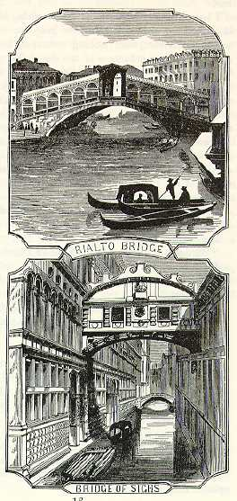

Venice By NightI began to feel that the old Venice of song and story had departed forever. But I was too hasty. In a few minutes we swept gracefully out into the Grand Canal, and under the mellow moonlight the Venice of poetry and romance stood revealed. Right from the water's edge rose long lines of stately palaces of marble; gondolas were gliding swiftly hither and thither and disappearing suddenly through unsuspected gates and alleys; ponderous stone bridges threw their shadows athwart the glittering waves. There was life and motion everywhere, and yet everywhere there was a hush, a stealthy sort of stillness, that was suggestive of secret enterprises of bravoes and of lovers; and clad half in moonbeams and half in mysterious shadows, the grim old mansions of the Republic seemed to have an expression about them of having an eye out for just such enterprises as these at that same moment. Music came floating over the waters--Venice was complete. It was a beautiful picture--very soft and dreamy and beautiful. But what was this Venice to compare with the Venice of midnight? Nothing. There was a fête--a grand fête in honor of some saint who had been instrumental in checking the cholera three hundred years ago, and all Venice was abroad on the water. It was no common affair, for the Venetians did not know how soon they might need the saint's services again, now that the cholera was spreading every where. So in one vast space--say a third of a mile wide and two miles long--were collected two thousand gondolas, and every one of them had from two to ten, twenty and even thirty colored lanterns suspended about it, and from four to a dozen occupants. Just as far as the eye could reach, these painted lights were massed together--like a vast garden of many-colored flowers, except that these blossoms were never still; they were ceaselessly gliding in and out, and mingling together, and seducing you into bewildering attempts to follow their mazy evolutions. Here and there a strong red, green, or blue glare from a rocket that was struggling to get away, splendidly illuminated all the boats around it. Every gondola that swam by us, with its crescents and pyramids and circles of colored lamps hung aloft, and lighting up the faces of the young and the sweet-scented and lovely below, was a picture; and the reflections of those lights, so long, so slender, so numberless, so many-colored and so distorted and wrinkled by the waves, was a picture likewise, and one that was enchantingly beautiful. Many and many a party of young ladies and gentlemen had their state gondolas handsomely decorated, and ate supper on board, bringing their swallow-tailed, white-cravatted varlets to wait upon them, and having their tables tricked out as if for a bridal supper. They had brought along the costly globe lamps from their drawing-rooms, and the lace and silken curtains from the same places, I suppose. And they had also brought pianos and guitars, and they played and sang operas, while the plebeian paper-lanterned gondolas from the suburbs and the back alleys crowded around to stare and listen. |